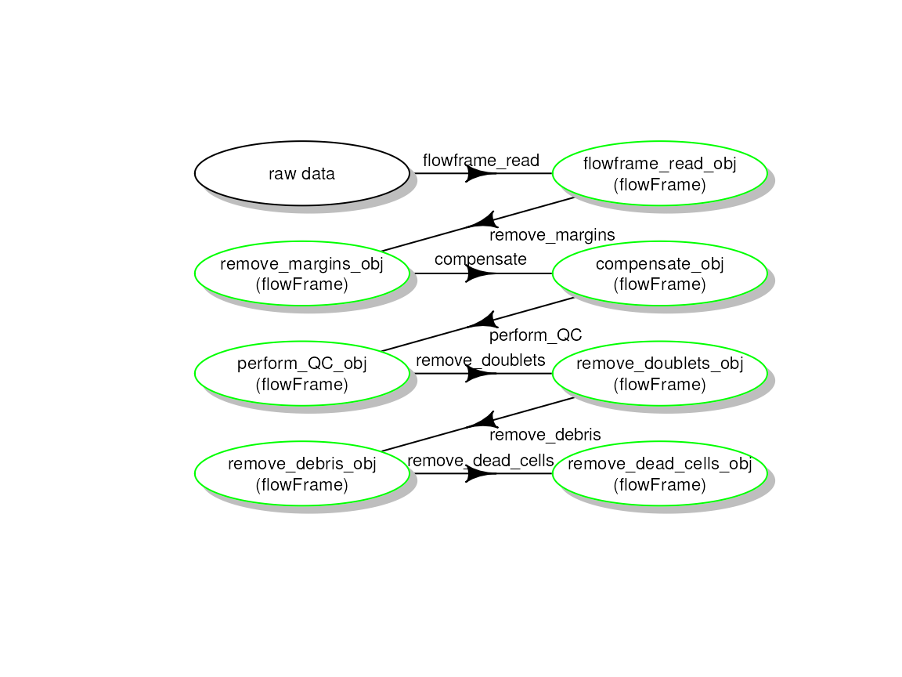
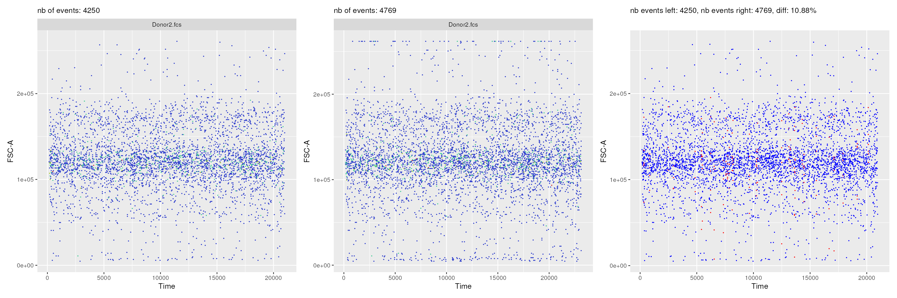
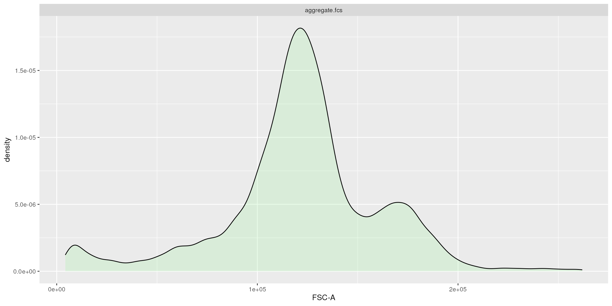

vignettes/CytoPipelineGUI.Rmd
CytoPipelineGUI.RmdAbstract
This vignette gives a short introduction to CytoPipelineGUI, which is the companion package of CytoPipeline for interactive visualization of flow cytometry data pre-processing pipeline results. This vignette is distributed under a CC BY-SA license.
To install this package, start R and enter (uncommented):
# if (!require("BiocManager", quietly = TRUE))
# install.packages("BiocManager")
#
# BiocManager::install("CytoPipelineGUI")CytoPipelineGUI is the companion package of
CytoPipeline, and is used for interactive visualization of
flow cytometry data pre-processing pipeline results. It implements two
shiny applications :
a shiny app for interactive comparison of flow frames that are
the results of CytoProcessingSteps of the same or different CytoPipeline
experiments.
It is launched using the following statement:
CytoPipelineCheckApp() (see below);
a shiny app for interactive visualization and manual adjustments
of scale transformation objects. It is launched using the following
statement: ScaleTransformApp() (see below).
In order to be able to show CytoPipelineGUI in action,
as a pre-requisite we need to have created a CytoPipeline
object, defined the different pipeline steps, and run the pipeline until
completion, so that all intermediate results can be found on a cache.
These preliminary steps are performed by the preparation code below.
# raw data
rawDataDir <- system.file("extdata", package = "CytoPipeline")
sampleFiles <- file.path(rawDataDir, list.files(rawDataDir,
pattern = "Donor"))
# output files
workDir <- suppressMessages(base::tempdir())
# pipeline configuration files (in json)
jsonDir <- rawDataDir
# creation of CytoPipeline objects
pipL_PeacoQC <-
CytoPipeline(file.path(jsonDir, "OMIP021_PeacoQC_pipeline.json"),
experimentName = "OMIP021_PeacoQC",
sampleFiles = sampleFiles)
pipL_flowAI <-
CytoPipeline(file.path(jsonDir, "OMIP021_flowAI_pipeline.json"),
experimentName = "OMIP021_flowAI",
sampleFiles = sampleFiles)
# execute PeacoQC pipeline
suppressWarnings(execute(pipL_PeacoQC, rmCache = TRUE, path = workDir))
# execute flowAI pipeline
suppressWarnings(execute(pipL_flowAI, rmCache = TRUE, path = workDir))## Quality control for the file: Donor1
## 3.18% of anomalous cells detected in the flow rate check.
## 0% of anomalous cells detected in signal acquisition check.
## 0.12% of anomalous cells detected in the dynamic range check.
## Quality control for the file: Donor2
## 4.52% of anomalous cells detected in the flow rate check.
## 0% of anomalous cells detected in signal acquisition check.
## 0.1% of anomalous cells detected in the dynamic range check.If you are unfamiliar with CytoPipeline package, and you
would like to know more about these steps, it is advised that you read
the CytoPipeline vignette, and/or that you watch the videos
illustrating the CytoPipeline suite, which are accessible
through links included in the Demo.Rmd vignette.
The visualization tools shown here are demonstrated on the results of
two different previously run CytoPipeline objects. These
flow cytometry pre-processing pipeline are described in details in the
CytoPipeline vignette. Here below is a short summary of the
illustrating dataset, as well as the pipeline steps.
The example dataset that will be used throughout this vignette is derived from a reference public dataset accompanying the OMIP-021 (Optimized Multicolor Immunofluorescence Panel 021) article (Gherardin et al. 2014).
A sub-sample of this public dataset is built-in in the
CytoPipeline package, as the OMIP021 dataset. See the
MakeOMIP021Samples.R script for more details on how the
OMIP021 dataset was created. This script is to be found in
the script subdirectory in the CytoPipeline
package installation path.
In our example pipeline, we assumed that we wanted to pre-process the
two samples of the OMIP021 dataset, and that we wanted to
compare what we would obtain when pre-processing these files using two
different QC methods.
In the first pre-processing pipeline, we used the flowAI
QC method (Monaco et al. 2016), while in
the second pipeline, we used the PeacoQC method (Emmaneel et al. 2021).
In both pipelines, the first part consisted in estimating appropriate
scale transformation functions for all channels present in the sample
flowFrame. For this, we ran the following steps (Fig.
1):
.fcs filesScale transform processing queue
After this first part, pre-processing for each file, one by one, was
performed.
However, depending on the choice of QC method, the order of steps needed
to be slightly different (see Fig. 2) :
Pre-processing queue for two different pipeline settings
Using the CytoPipelineGUI package, it is possible to
interactively inspect intermediate results produced during the pipeline
execution.
This is done through the CytoPipelineCheckApp, which can
provide a view of the data structure, i.e. the flowFrame,
at any step of any pipeline, as well as a comparison between any the
pair of flowFrame state.
if (interactive()) {
CytoPipelineGUI::CytoPipelineCheckApp(dir = workDir)
}It is difficult to extensively demonstrate specific user interactions
in a vignette, therefore live demo videos can be found from the
Demo.Rmd vignette.
However, it is possible to mimic the call to some of the shiny
application features, by using some specific
CytoPipelineGUI exported functions.
A first example below is a function call which retrieves the visuals of the workflow of a previously run pipeline:
# pre-processing workflow
expName <- "OMIP021_PeacoQC"
CytoPipelineGUI::plotSelectedWorkflow(
experimentName = expName,
whichQueue = "pre-processing",
sampleFile = sampleFiles[1],
path = workDir)
It is also possible to programmatically obtain comparison plots that
are displayed within the shiny application.
Here below is an example, where one is comparing the two pipelines
(PeacoQC vs flowAI) after the QC step:
expName1 <- "OMIP021_PeacoQC"
expName2 <- "OMIP021_flowAI"
p1 <- CytoPipelineGUI::plotSelectedFlowFrame(
experimentName = expName1,
whichQueue = "pre-processing",
sampleFile = 2,
flowFrameName = "perform_QC_obj",
path = workDir,
xChannelLabel = "Time : NA",
yChannelLabel = "FSC-A : NA",
useAllCells = TRUE,
useFixedLinearRange = FALSE)
p2 <- CytoPipelineGUI::plotSelectedFlowFrame(
experimentName = expName2,
whichQueue = "pre-processing",
sampleFile = 2,
flowFrameName = "perform_QC_obj",
path = workDir,
xChannelLabel = "Time : NA",
yChannelLabel = "FSC-A : NA",
useAllCells = TRUE,
useFixedLinearRange = FALSE)
p3 <- CytoPipelineGUI::plotDiffFlowFrame(
path = workDir,
experimentNameFrom = expName1,
whichQueueFrom = "pre-processing",
sampleFileFrom = 2,
flowFrameNameFrom = "perform_QC_obj",
xChannelLabelFrom = "Time : NA",
yChannelLabelFrom = "FSC-A : NA",
experimentNameTo = expName2,
whichQueueTo = "pre-processing",
sampleFileTo = 2,
flowFrameNameTo = "perform_QC_obj",
xChannelLabelTo = "Time : NA",
yChannelLabelTo = "FSC-A : NA",
useAllCells = TRUE,
useFixedLinearRange = FALSE)
p1+p2+p3
Besides the flowFrame comparison tool, CytoPipelineGUI
provides another shiny app, which allows to interactively visualize and
manage the scale transformations that are generated as part of our
prep-processing pipelines.
If the shape of the scale transformations that were automatically set by the chosen algorithm appears to be non satisfactory, it is possible, using this shiny application, to manually adjust the parameters of the transformation, and save the results in a RDS object. This object can then be re-used in another pipeline instance.
# 5. show scale transformations
if (interactive()){
CytoPipelineGUI::ScaleTransformApp(dir = workDir)
}Note that here also, it is possible to obtain the visuals of the
scale transformations programmatically, although this is a bit more
evolved, as one has to use CytoPipeline functions for
this.
expName <- "OMIP021_PeacoQC"
pipL <- CytoPipeline::buildCytoPipelineFromCache(
experimentName = expName,
path = workDir
)
ff <- CytoPipeline::getCytoPipelineFlowFrame(
pipL,
path = workDir,
whichQueue = "scale transform",
objectName = "flowframe_aggregate_obj"
)
p1 <- plotScaleTransformedChannel(
ff,
channel = "FSC-A",
transfoType = "linear",
linA = 0.0002,
linB = -0.5)
p2 <- plotScaleTransformedChannel(
ff,
channel = "CD3",
applyTransform = "data",
transfoType = "logicle",
negDecades = 1,
width = 0.5,
posDecades = 4
)
p1+p2
## R version 4.4.0 (2024-04-24)
## Platform: x86_64-pc-linux-gnu
## Running under: Ubuntu 22.04.4 LTS
##
## Matrix products: default
## BLAS: /usr/lib/x86_64-linux-gnu/openblas-pthread/libblas.so.3
## LAPACK: /usr/lib/x86_64-linux-gnu/openblas-pthread/libopenblasp-r0.3.20.so; LAPACK version 3.10.0
##
## locale:
## [1] LC_CTYPE=en_US.UTF-8 LC_NUMERIC=C
## [3] LC_TIME=en_US.UTF-8 LC_COLLATE=en_US.UTF-8
## [5] LC_MONETARY=en_US.UTF-8 LC_MESSAGES=en_US.UTF-8
## [7] LC_PAPER=en_US.UTF-8 LC_NAME=C
## [9] LC_ADDRESS=C LC_TELEPHONE=C
## [11] LC_MEASUREMENT=en_US.UTF-8 LC_IDENTIFICATION=C
##
## time zone: UTC
## tzcode source: system (glibc)
##
## attached base packages:
## [1] stats graphics grDevices utils datasets methods base
##
## other attached packages:
## [1] patchwork_1.2.0 CytoPipelineGUI_1.3.0 CytoPipeline_1.5.0
## [4] BiocStyle_2.33.0
##
## loaded via a namespace (and not attached):
## [1] DBI_1.2.2 gridExtra_2.3 rlang_1.1.3
## [4] magrittr_2.0.3 clue_0.3-65 GetoptLong_1.0.5
## [7] matrixStats_1.3.0 compiler_4.4.0 RSQLite_2.3.6
## [10] png_0.1-8 systemfonts_1.0.6 vctrs_0.6.5
## [13] reshape2_1.4.4 stringr_1.5.1 pkgconfig_2.0.3
## [16] shape_1.4.6.1 crayon_1.5.2 fastmap_1.1.1
## [19] dbplyr_2.5.0 labeling_0.4.3 utf8_1.2.4
## [22] promises_1.3.0 ncdfFlow_2.51.0 rmarkdown_2.26.2
## [25] graph_1.83.0 ragg_1.3.1 purrr_1.0.2
## [28] bit_4.0.5 xfun_0.43 zlibbioc_1.51.0
## [31] cachem_1.0.8 jsonlite_1.8.8 flowWorkspace_4.17.0
## [34] blob_1.2.4 highr_0.10 later_1.3.2
## [37] parallel_4.4.0 cluster_2.1.6 R6_2.5.1
## [40] bslib_0.7.0 stringi_1.8.4 RColorBrewer_1.1-3
## [43] jquerylib_0.1.4 Rcpp_1.0.12 bookdown_0.39
## [46] iterators_1.0.14 knitr_1.46 zoo_1.8-12
## [49] IRanges_2.39.0 flowCore_2.17.0 httpuv_1.6.15
## [52] tidyselect_1.2.1 yaml_2.3.8 doParallel_1.0.17
## [55] codetools_0.2-20 curl_5.2.1 lattice_0.22-6
## [58] tibble_3.2.1 plyr_1.8.9 Biobase_2.65.0
## [61] shiny_1.8.1.1 withr_3.0.0 evaluate_0.23
## [64] desc_1.4.3 BiocFileCache_2.13.0 circlize_0.4.16
## [67] pillar_1.9.0 BiocManager_1.30.23 filelock_1.0.3
## [70] foreach_1.5.2 flowAI_1.35.0 stats4_4.4.0
## [73] generics_0.1.3 diagram_1.6.5 S4Vectors_0.43.0
## [76] ggplot2_3.5.1 munsell_0.5.1 ggcyto_1.33.0
## [79] scales_1.3.0 xtable_1.8-4 PeacoQC_1.15.0
## [82] changepoint_2.2.4 glue_1.7.0 tools_4.4.0
## [85] hexbin_1.28.3 data.table_1.15.4 fs_1.6.4
## [88] XML_3.99-0.16.1 grid_4.4.0 RProtoBufLib_2.17.0
## [91] colorspace_2.1-0 cli_3.6.2 textshaping_0.3.7
## [94] fansi_1.0.6 cytolib_2.17.0 ComplexHeatmap_2.21.0
## [97] dplyr_1.1.4 Rgraphviz_2.49.0 gtable_0.3.5
## [100] sass_0.4.9 digest_0.6.35 BiocGenerics_0.51.0
## [103] farver_2.1.2 rjson_0.2.21 htmlwidgets_1.6.4
## [106] memoise_2.0.1 htmltools_0.5.8.1 pkgdown_2.0.9.9000
## [109] lifecycle_1.0.4 httr_1.4.7 GlobalOptions_0.1.2
## [112] mime_0.12 bit64_4.0.5